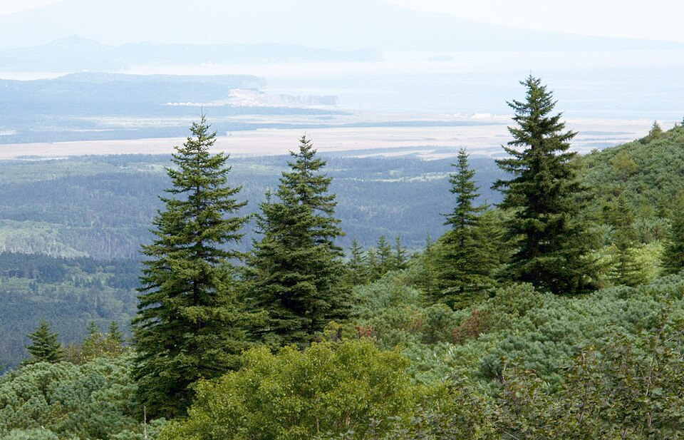

사진: Original: Ляховец Сергей; this edit: MPF · CC BY-SA 4.0 · 위키미디어 공용 · 흑백으로 바꿈
가문비나무
🪵 지금은 없는 나무 · 예전에는 학교에 있었지만 지금은 베어져서 볼 수 없어요.
가문비나무는 소나무과에 속하는 상록 침엽수로, 주로 추운 산악 지역에서 자라는 나무예요.
특징
- 잎은 바늘처럼 뾰족하고 사계절 내내 푸른빛을 유지해요.
- 솔방울이 소나무처럼 위로 서지 않고 가지 아래로 길게 매달려요.
- 나무껍질은 어릴 때 매끈하지만, 자라면서 비늘처럼 갈라져요.